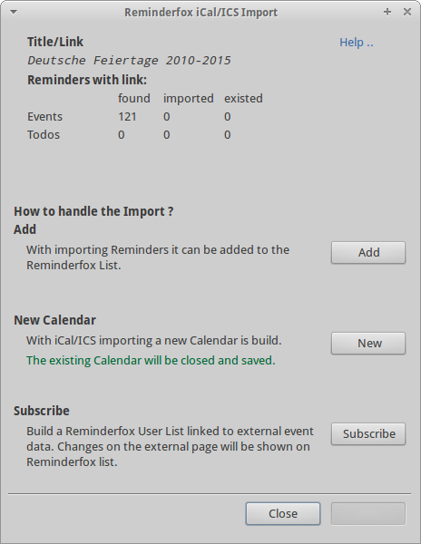

|
Just use the Context Menu on the source
|
Drag&drop the source data to the SmartFoxy symbol on the Main Menu bar or to the Status-/Addon bar |
Contents
|
Due to the fact Reminderfox works with the industry standard format iCal/ICS, calendar data from other sources can be imported. Import feature differentiate between "Add Reminders" and "Subscribe Calendar Events".
With 'Add' the imported reminders (events and/or todo's) are added to your existing list of reminders (sort of like merging). This allows for you to import common shared lists of reminders or any event data you receive from external like flight reservations or invitations and have it available in your Reminderfox calendar. Also with importing you can decide to completely overwrite your current calendar, think about restoring from a backup file.
The 'Subscribe' mode is used to add event data to your calendar, but not directly to your 'normal' store but build a list with the event data. In fact these lists, call 'subscription lists' are pointers to external sources. So any change or update the provider makes at the source data will be shown directly on that Reminderfox list. Think about sport events, a good example is given at www.southendzone.com/ics/steelers/
Sources to import reminders for your Reminderfox calendar can be web-pages, e-mails, files on your computer and also contact details stored with your Thunderbird addressbook.
There are different modes to import the data from the source:
|
Just use the Context Menu on the source
|
Drag&drop the source data to the SmartFoxy symbol on the Main Menu bar or to the Status-/Addon bar |
With "Add/Subscribe with Reminderfox" or dropping the link the importing will be started, see next
Importing data with just one event will directly open the "Add Reminder" dialog for showing the event details. Edit/complement the event with attributes like alarm, category or other as required before storing or cancel the import.
Data with multiple events and/or todos will open the "Reminderfox iCal/ICS Import" dialog
|  | Based on the data to be imported, that dialog will show the Title/Link and inform about the number of events / todos to be imported.
Use the buttons to select the import mode: [Add], [New] or [Subscribe] |
[Add]
Adding can overwrite existing reminders -- that way a change the provider of the event has made can be imported, or "Ignore" will import only new events. |
 |
 |
| The right picture shows the successful importing. Use the "Categories" to easily differentiate imported data from the others. | ||
[New]
This will build a new reminder data store. Before that the user has to [Confirm] this mode and a [New] button is activated.
The new data storage location is build from the old path with a file name build from the source.
Pressing [New] will store the previous reminder data and the new is read to the named file and will be shown on the main dialog. |
 |
 |
| Use the "Categories" to easily differentiate imported data from the others. | ||
[Subscribe]
The subscribe will try to build a name for the subscription list, it can be changed as required. |
 |
 |
| The main dialog shows the imported/subscribed events which has been imported with the category "Steelers". The list is filtered with Category entry to just show those subscribed events. | ||

{kind=link}
{kind=link}
{kind=link}